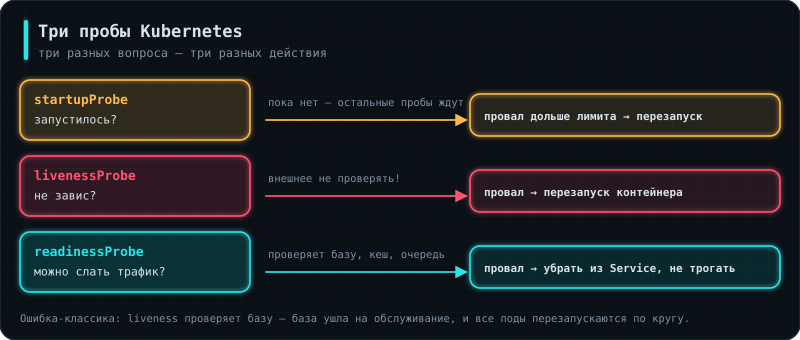

Аналогия: врач задаёт три разных вопроса — «жив ли пациент», «может ли он работать» и «закончился ли наркоз». Ответы на них означают разные действия, и путать их нельзя.
Без проб Kubernetes считает под здоровым, пока процесс внутри не умер. Приложение может зависнуть, потерять связь с базой, отвечать ошибками на всё подряд — трафик всё равно будет идти. Пробы дают кластеру возможность это понять.
containers:
- name: app
livenessProbe:
httpGet: { path: /healthz, port: 8000 }
initialDelaySeconds: 10
periodSeconds: 10
failureThreshold: 3
readinessProbe:
httpGet: { path: /readyz, port: 8000 }
periodSeconds: 5
startupProbe:
httpGet: { path: /healthz, port: 8000 }
failureThreshold: 30
periodSeconds: 5 # даёт до 150 секунд на запуск
Вот те самые эндпоинты из 2.5 Бэкенд-сервис, §11 — теперь видно, кто их читает.
liveness отвечает на вопрос «процесс не завис». Не прошла — под перезапускают. Поэтому проверять в ней что-либо внешнее нельзя: если база ушла на обслуживание, перезапуск приложения ничем не поможет.
readiness отвечает «можно ли слать трафик». Не прошла — под убирают из Service, но не трогают. Вот здесь и проверяют зависимости: база, очередь, кеш. Как только всё вернётся, под сам вернётся в ротацию.
startup нужна для медленно стартующих приложений. Пока она не прошла, остальные пробы не выполняются вовсе. Без неё liveness с коротким интервалом убьёт под, который просто не успел запуститься за отведённое время, и приложение уйдёт в бесконечный цикл перезапусков.
🛑Проверка базы в liveness — типовая авария
База ушла на десять минут обслуживания. Kubernetes видит, что liveness не проходит, убивает под, поднимает новый — тот тоже не может достучаться до базы, и цикл повторяется, пока база не вернётся. При этом настоящей проблемы с приложением не было ни секунды.
Правило: liveness проверяет только себя и почти всегда отвечает успешно; readiness проверяет зависимости и может честно сказать «сейчас не готов». Это ровно то различие, что разбиралось в 2.5 Бэкенд-сервис, §11, — и в Kubernetes цена ошибки становится наглядной.